First-steps guide¶
Launching the Majordom server¶
Make sure that you fulfill the Requirements and that you have followed the Installation steps.
Launching the Majordom app for the first time¶
Login to your server¶
When you launch the app, you directly arrive on a login screen.
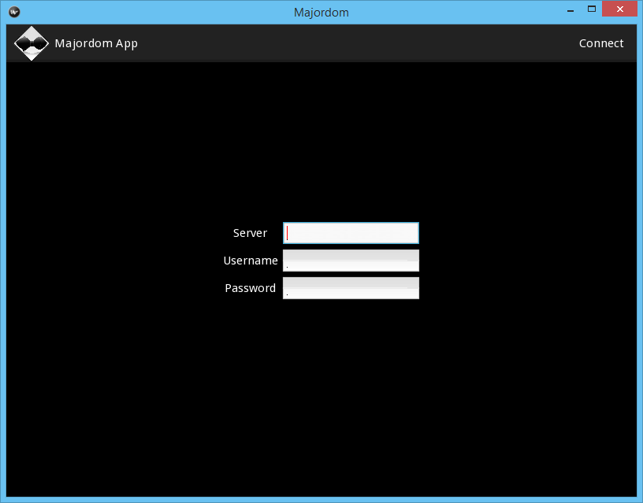For the moment, user handling is not supported on Majordom: the Username and Password fields are therefore useless. The only fields which matters at the moment is the Server field. If you have launched the server without changing the base settings, you should use http://127.0.0.1:8080/.
Once it is done, touch or click on Connect in the top-left corner of the screen.
The Home Screen¶
If everything went smoothly, you should now be seeing your Home screen.
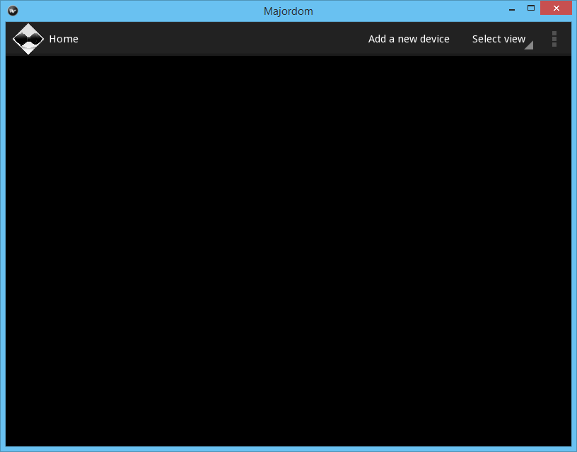The Home screen is the place you have direct access to all the devices connected to Majordom. If the device is an actuator, you can also interact with it and manually control it. For the moment, your home screen should obviously be empty since you have not added any device yet.
Access Majordom settings¶
The first thing you want to do now is to check the basic configuration of Majordom. For instance, you may want to specify the COM port to which a modem is connected. Otherwise, you would not be able to receive messages from it.
To access the settings, click on the three dots in the top-right corner of the screen and then click on Settings.
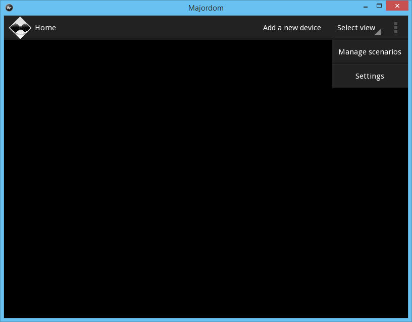A settings screen appears.
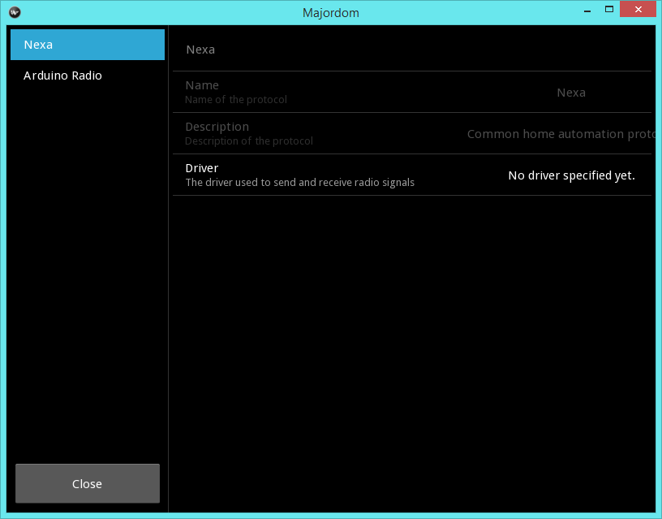- In this example, we see two categories of settings:
- Nexa are the settings of the Nexa protocol. The only setting available for the Nexa protocol is the modem used to receive radio messages.
- Arduino Radio are the settings of the Arduino Radio driver. The Arduino radio driver handles the communication with the Arduino Radio custom radio 433MHz modem. You must therefore specify the COM port used to communicate with the Arduino.
Managing devices¶
Once Majordom is correctly set, you can start adding devices to the system.
Add a device¶
To add a device, first click on Add a new device in the top menu of the Home screen. A popup should appear.
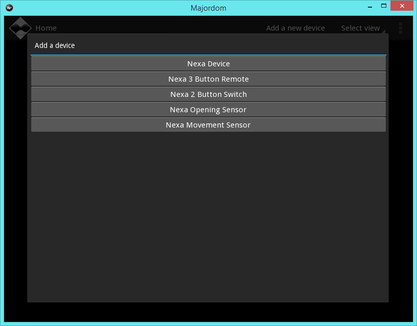Select the device you want to add. There are two kinds of devices: those which are automatically added to the system and those which require synchronization in order to connect to Majordom.
Add an automatically detected device¶
We take the example of the Nexa 3 Button Remote. When you choose list in the devices list, a new screen should appear.
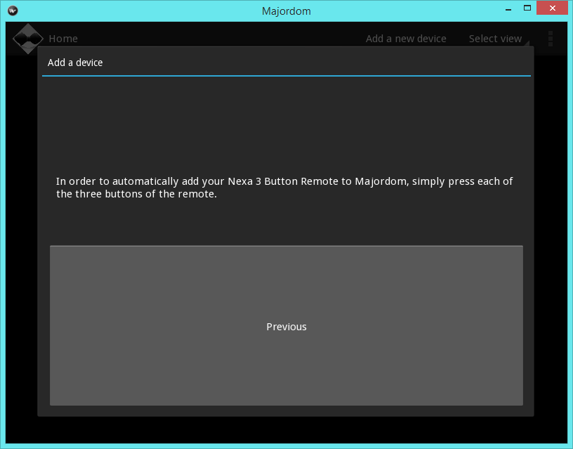In the upper part of the popup, a text describes the way you should act so that your device is added to the system. For instance, here, you have to press each button of the remote in order to add it to Majordom. Once you have done it, if everything went smoothly, another screen should be appearing automatically.
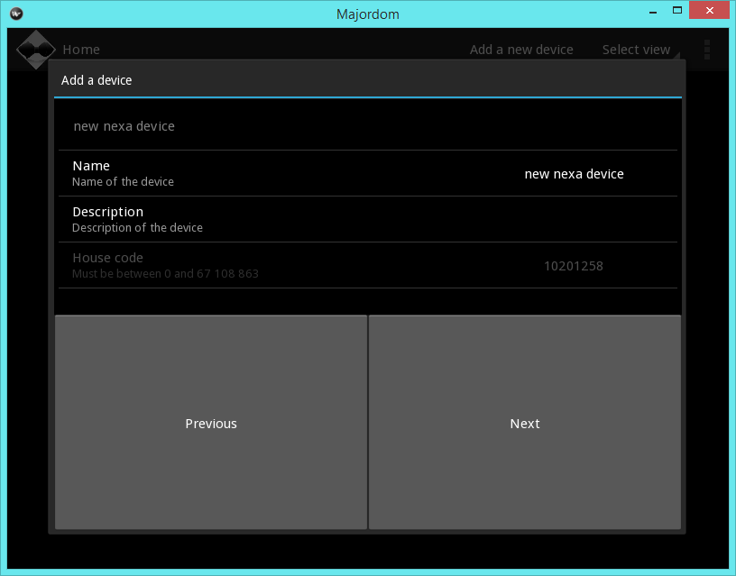This is the settings screen of the device. That is where you can,among others, choose the name under which your device will appear on the Home Screen.
One you are finished with the device settings, simply click Next: you are brought back to the Home screen and your new device should have appeared.
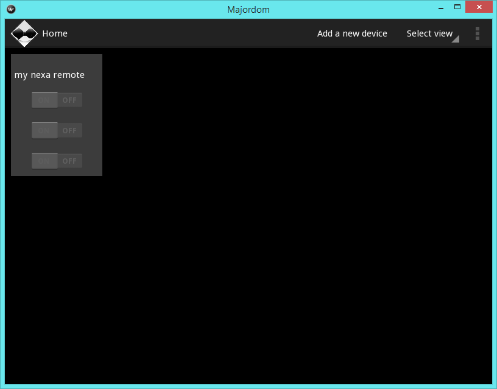Add a device needing synchronization¶
In this case, when you choose such a device, for instance a Nexa device, you are first brought to the device settings screen.
Then, when you are finished, click Next. A synchronization screen will appear.
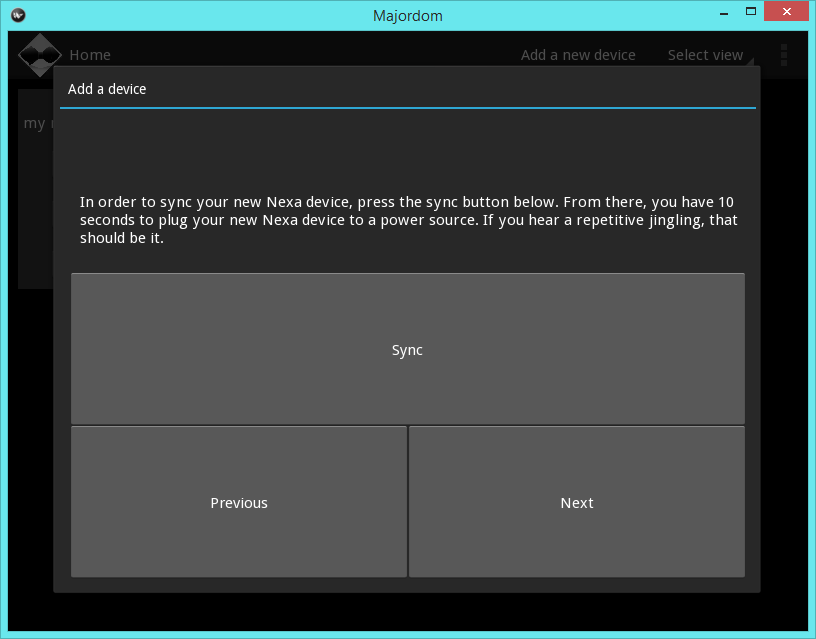Once again, you must follow the instructions written in the upper part of the popup before clicking Next. Clicking Next will bring you to a synchronization check screen.
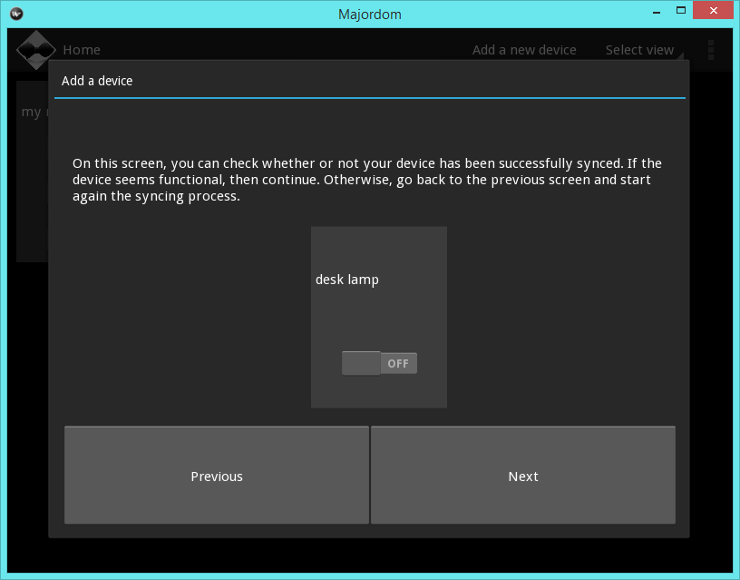On this screen, you can see your newly-added device as it will be displayed on the Home screen. You can check its working: on the screen above, the user can click on the switch to make sure that the device is actually working.
If it does not work properly, click Previous and start again the synchronization.
Otherwise, go back to the Home screen by clicking Next.
Handling scenarios¶
Now that you are able to add devices to Majordom, it is timeto get to the most interesting parts: the scenarios.
The scenarios are a powerful tool to graphically and very easily program the behaviour of your Majordom server.
They make use of informations and actions that were automatically added to Majordom when you added a new Device. For instance, a Nexa Device comes with one information, its state (on or off) and four actions: switch on, switch off, sync and unsync.
They also make use of processing blocks. Processing blocks are blocks which have inputs on the one side and outputs on the other side. When one of their inputs is updated, they process and consequently update their outputs.
Create a new Scenario¶
In order to add a new scenario to Majordom, first access the Manage scenarios screen by clicking on the three dots at the top-right corner of the Home screen and then click Manage scenarios. The following screen should appear.
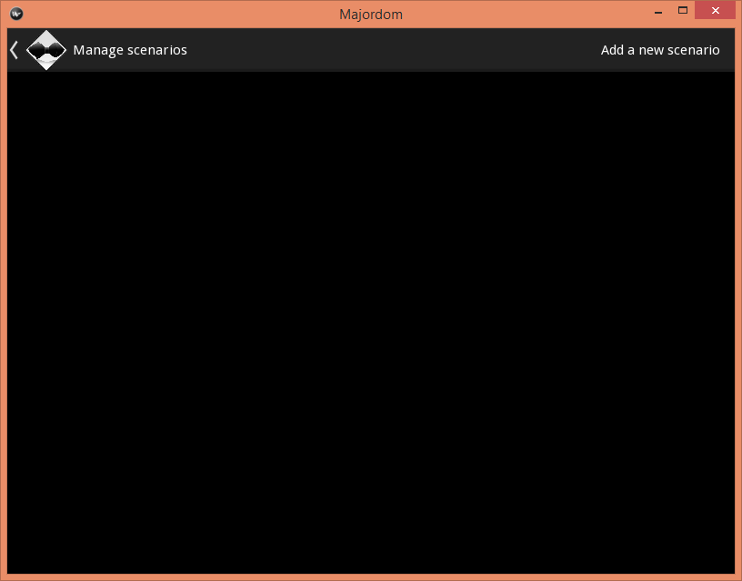It is an empty list since you have created no scenario yet. To add a new scenario, click on Add a new scenario in the menu at the top of the screen. A simple screen should appear.
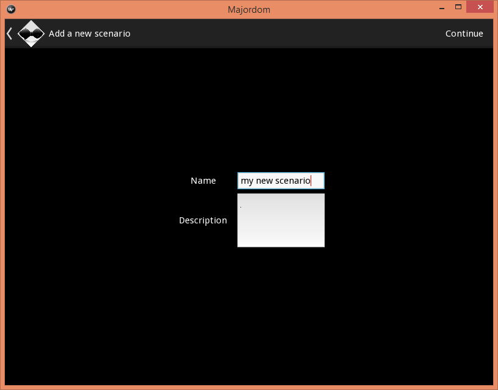You can enter a name and a short text describing the purpose of the scenario. Once you are done, click on Continue at the top-right corner of the screen. You access the scenario editor screen.
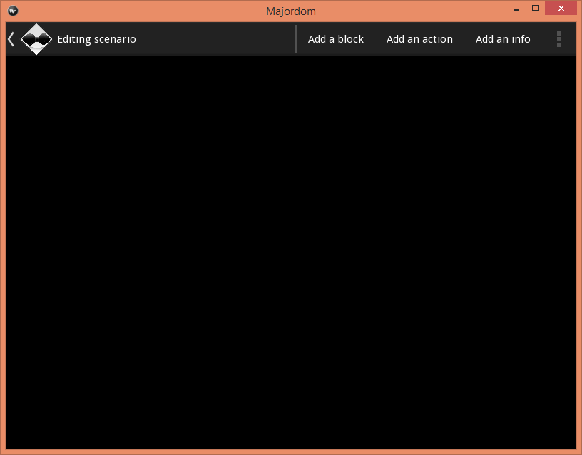Edit a scenario¶
Once you are on the scenario edit screen, you can add processing blocks, actions or infos to your scenario and then interact with them.
Add a processing block¶
In order to add a processing block, click on Add a block in the menu at the top of the screen. A popup with the list of available blocks should appear.
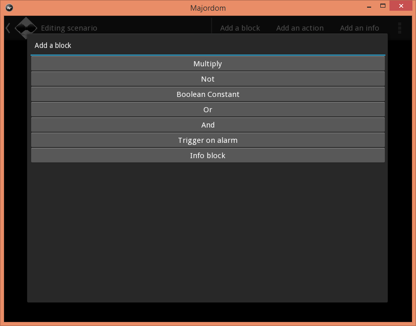Click on the block you want to add to the scenario. It should appear in the scenario screen in the bottom-left corner.
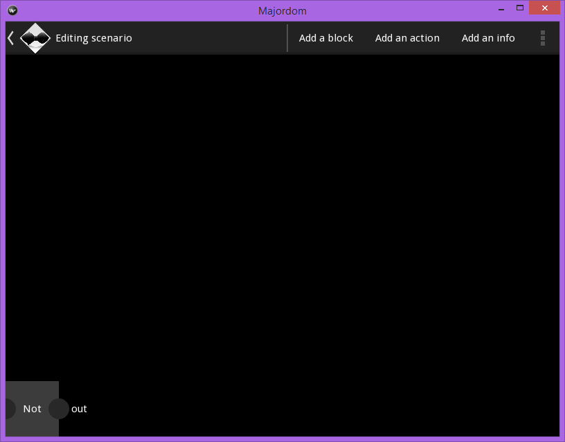Add an action¶
In order to add an action, follow exactly the same steps as for adding a processing block, except that you click on Add an action in the menu at the top of the scenario editor.
Add an info¶
In order to add an info, follow exactly the same steps as for adding a processing block, except that you click on Add an info in the menu at the top of the scenario editor.
Draw a link¶
Links are drawn between the output node of a block and the input node of another block, if the two blocks are compatible, i.e. mostly if they are the same type (boolean, numeric...).
In order to draw a link between nodes, first click a node. You will see that non-compatible nodes turn grey: they are deactivated and you can therefore not select them as destination node.
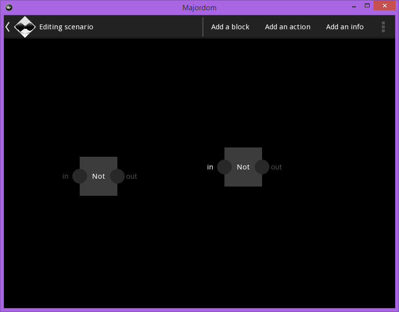If you changed your mind and want to stop creating a node, just click on the same node again.
Otherwise, click on a second node and a link between the two nodes should appear.

Interact with blocks and links¶
Within the scenario editor, you can move blocks at your liking: just touch them and move your finger.
You can also navigate within the editor: touch a place without block nor link and move your finger.
You can zoom in and out with two fingers, in order to have a more general view of your scenario.
To remove a block, double tap on it. A bubble menu should appear. Click on Remove if you want to remove the block from the scenario.
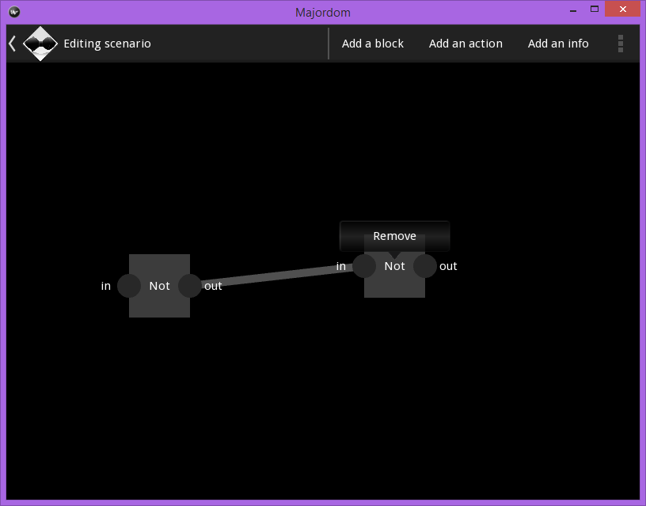Access the settings of a block¶
Specific blocks, such as the Info Block can be set. In order to set such a block, double click on it. A menu bubble should appear, having this time a Settings button.
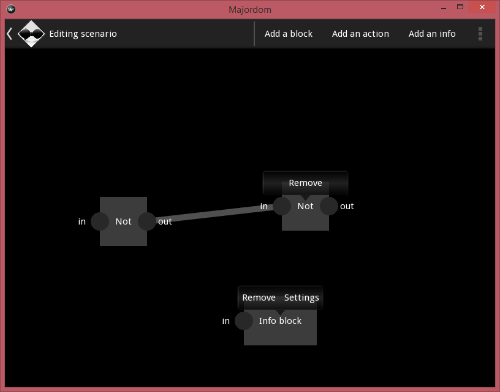Click on the Settings button and a popup with a settings screen should appear.
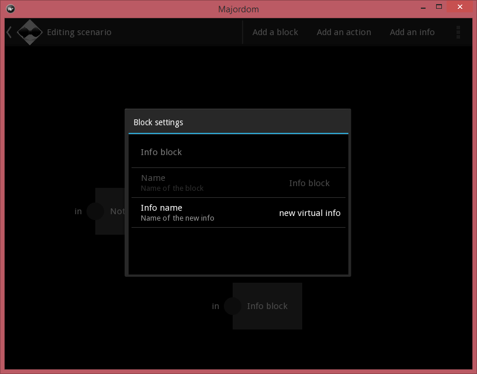Activate the scenario¶
In order to activate the scenario, i.e. that Majordom behaves as you programmed it, you must activate the scenario. To do so, click on the three dots in the top-right corner of the screen and then click on Activate.
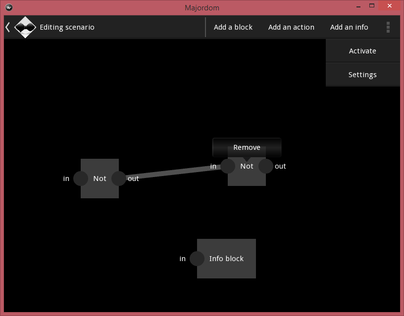Now, enjoy your autonomous home!

Table Of Contents
- First-steps guide